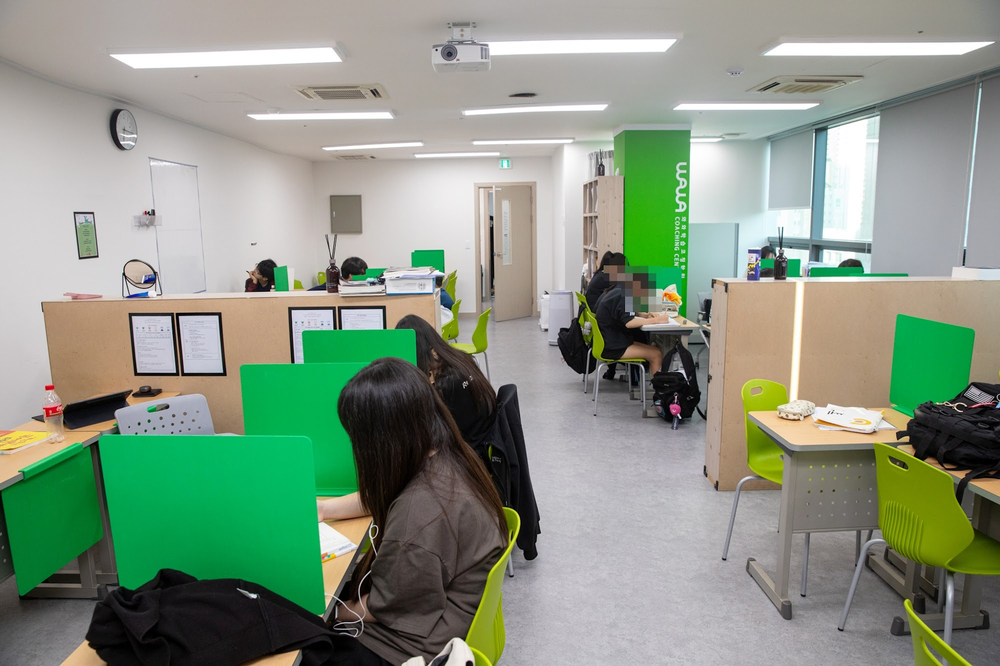
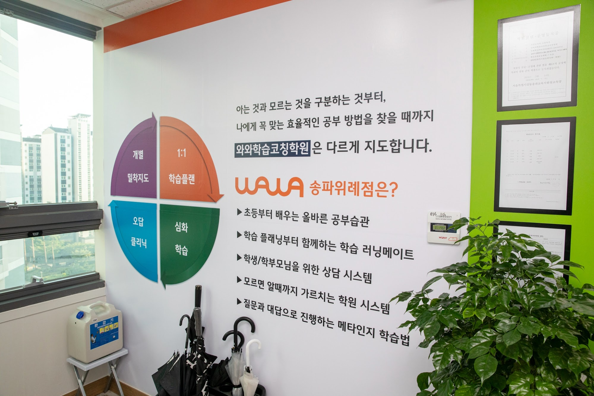
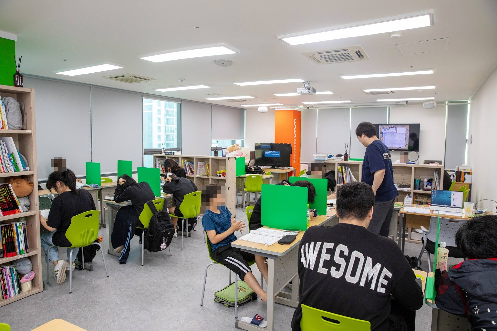
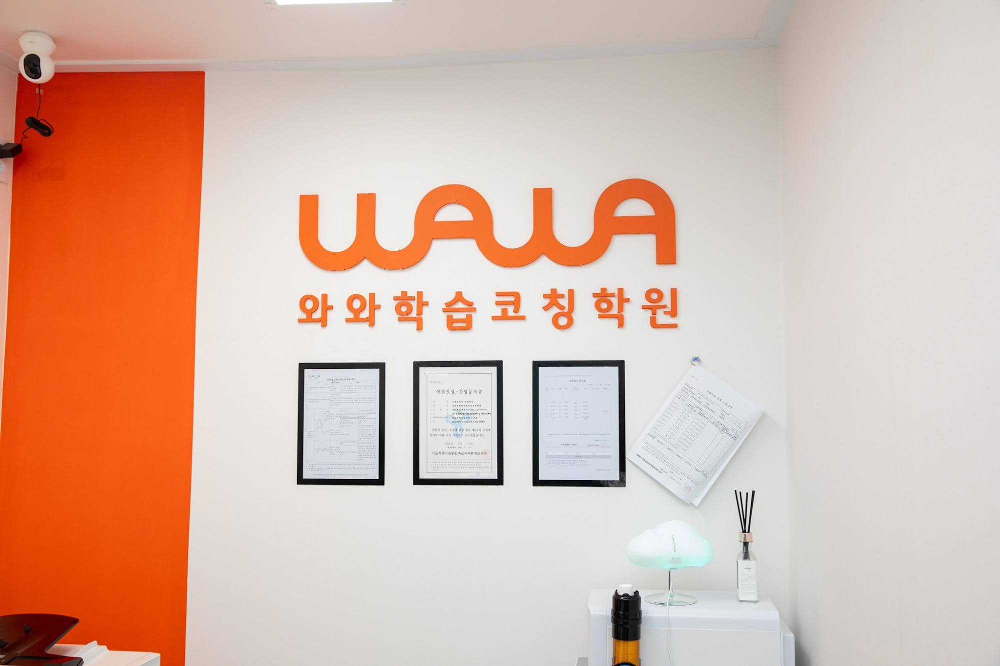

안녕하세요, 서울 송파구 위례 와와학습코칭 송파위례점입니다. 여름방학이 마무리되고 곧 2학기 개학입니다. 오늘은 위례중·송례중 학부모님께 개학 대비 이야기를 전해드립니다.
위례 학군, 개학 후 2학기 내신이 시작됩니다
위례중·송례중 학생들을 지도해 보면 분명합니다. 위례신도시는 학구열이 높은 신도시 학군이라, 개학하자마자 2학기 내신 경쟁이 시작됩니다. 2학기는 진도가 빠르고 내용도 어려워, 방학의 마무리를 어떻게 보내느냐가 첫 시험 성적을 좌우합니다. 송파위례점은 개학 전 지금부터 2학기 내신을 앞서 준비합니다.

송파위례점의 개학 대비 코칭
막연히 예습만 하는 것으로는 부족합니다. 송파위례점은 개별 밀착지도·1:1 학습플랜·오답 클리닉으로 이렇게 지도합니다.
- 수학 — 2학기 핵심 단원을 개념부터 선행하고, 틀린 유형을 분류해 약점을 좁히기 (위례 수학학원·수학 과외)
- 영어 — 2학기 교과서 어휘·어법과 지문을 미리 익히고 서술형 대비 (위례 영어학원·영어 과외)
- 국어 — 비문학 독해와 문학 개념을 학교 지문 중심으로 다지기 (국어학원)
이렇게 개학을 준비하면 2학기 첫 시험에서 출발선이 완전히 달라집니다.

초등은 지금 '스스로 공부하는 힘'을 만듭니다
초등 시기의 성적보다 중요한 건 스스로 공부하는 습관입니다. 송례초·위례별초 학생들은 개학을 앞두고 매일의 학습 루틴과 기초 개념을 잡아, 중등으로 넘어갈 힘을 키웁니다. 위례에서 초등 공부방·영어학원·수학학원을 찾으신다면 이 습관 코칭이 답이 됩니다.
와와학습코칭 송파위례점 학년별 공부 방법
위례 와와학습코칭(와와학습코칭 송파위례점)은 초등학생·중학생 각 학년에 맞는 공부 방법으로 지도합니다. 조용한 자습실·공부방에서 스스로 공부하고, 영어학원·수학학원·과학학원·국어학원처럼 과목별 코칭까지 한곳에서 받을 수 있습니다.
- 초등학생 (초3·초4·초5·초6) — 스스로 공부하는 습관과 기초 개념 잡기. 위례 초등 수학학원·영어학원·공부방을 찾으신다면.
- 중학생 (중1·중2·중3) — 전과목 내신 대비와 고등 준비, 오답 정리와 서술형 훈련. 위례 중등 수학학원·영어학원·과학학원·국어학원.

와와학습코칭 송파위례점 위치와 주변
- 🚇 교통 — 위례중앙광장 인근, 위례광장로 188 아이온스퀘어 8층 816호
- 🏢 인근 아파트 — 위례자이·위례센트럴푸르지오·송파위례24단지 등 위례신도시 일대 단지에서 도보로 오실 수 있습니다.
와와학습코칭 송파위례점 인근 학교
위례 와와학습코칭(와와학습코칭 송파위례점)은 인근 학교 학생들의 내신을 함께 준비합니다. 아래 학교에 다니는 학생이라면 영어학원·수학학원·과학학원·국어학원을 따로 찾을 필요 없이, 가까운 우리 센터에서 과목별 1:1 자기주도학습 코칭·과외를 받을 수 있습니다.
- 인근 초등학교 — 송례초등학교·위례별초등학교 영어학원·수학학원·과학학원·국어학원·공부방
- 인근 중학교 — 위례중학교·송례중학교 영어 과외·수학 과외·과학학원·국어학원
📍 와와학습코칭 송파위례점 센터 정보 자세히 보기 — 주소·전화·인근 학교 안내를 확인하실 수 있습니다.